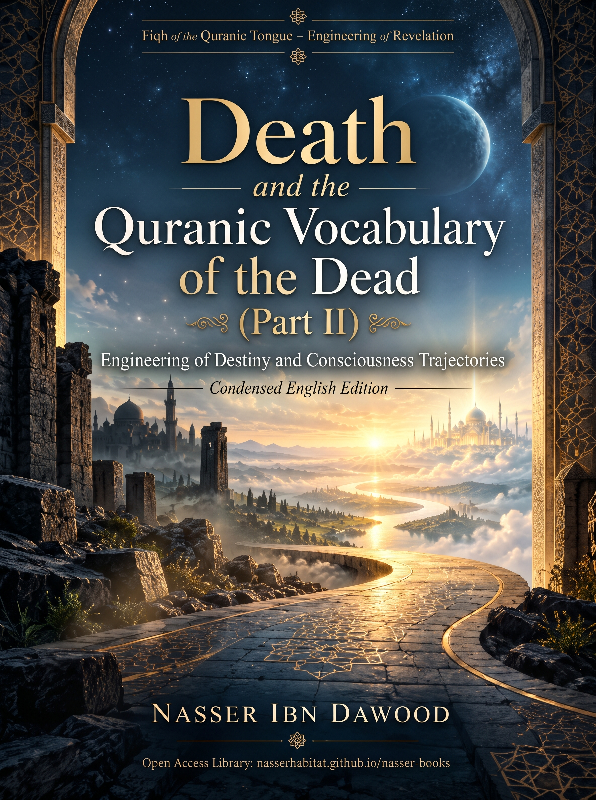

130. Death, the Dead, and Mortality in the Quran — Part II (106-B)

Engineering of destiny, consciousness trajectories, and the extended atlas of hypotheses, distinguishing text, inference, and operational models.
Condensed conceptual English adaptation; the Arabic text remains the primary source for detailed analysis and references.
قراءة PDF داخل الموقع / Read the PDF on this website
جارٍ تجهيز القارئ… / Preparing the reader…
Book Summary, Table of Contents & Excerpt
PROJECT: FIQH OF THE QURANIC TONGUE — ENGINEERING OF REVELATION (QCROS)
Death, the Dead, and Mortality in the Quran
(Part II — 106-B)
Engineering of Destiny, Consciousness Trajectories, and the Extended Atlas of Hypotheses
Condensed Conceptual English Edition — Methodologically Calibrated
Author: Nasser Ibn Dawood | License: CC BY-SA 4.0 | October 2026
I. The Global Knowledge Manifesto & II. Translator's Note
Open-Access Policy & Methodological Calibration
Knowledge is a universal right. The author firmly believes that wisdom should not be locked behind paywalls or language barriers.
• Global Access Policy: All books in this library are available for free in multiple digital formats (PDF, HTML, DOCX, TXT).
• The Digital Library: As of 2026, the collection hosts over 236 volumes across Arabic and English editions, fully optimized for AI-assisted research and digital archiving.
• Official Platforms: Main Website: nasserhabitat.github.io/nasser-books/ | GitHub: nasserhabitat/nasser-books
Translator's Note (The Bridge of Meaning): This English edition is a condensed conceptual adaptation ('extraction of essence'). It preserves the exact methodological status of the calibrated Arabic edition (106-B): a claim marked OPEN remains open; a CANDIDATE or OPERATIONAL HYPOTHESIS remains a candidate model; a RESISTED claim is not revived through simplification; and a CLOSED result remains closed only within its declared scope. Key Qur'anic terms (nafs, ruh, tawaffi, barzakh, ba'th, hashr) are retained in transliteration where single English equivalents would prematurely narrow the semantic field.
Preliminary Chapter: The Openness of Tadabbur & Epistemic Calibration
Distinguishing Text, Direct Statement, Networked Inference, and Operational Models
1. Rank of Hypotheses and the Term 'Law': Every thesis presented in this volume is a human interpretive effort to map inter-verse relations and construct testable models. Using the term 'Law' (e.g., ROOT LAW = 0 or DUAL-TRAJECTORY-LAW-01) is an internal procedural convention within QCROS denoting a proposed regularity or interpretive rule; it never implies legislative authority nor elevates human reasoning to the rank of infallible revelation.
2. Cumulative Contemplation (Tadabbur): The Quran invites collective contemplation in the plural (4:82, 47:24) and describes its verses as 'insights for mankind' (45:20). Contemplation is an open, cumulative trajectory across generations where subsequent researchers test, refine, or correct earlier models.
3. Renewed Remembrance (Al-Dhikr Al-Muhdath - 21:2, 26:5) & Cognitive Integrity: While the renewal of remembrance keeps the door of inquiry open, describing a reading as 'renewed' does not exempt it from contextual and resistant-set testing. Overcoming 'rigid cognitive constructs' (inherited dogmatic barriers) and purifying the heart aid reception, yet never grant anyone a monopoly over meaning.
Domain 1: The Carrier Network (Ruh, Nafs, Tawaffi) & Perceptual Centers
Deconstructing the Conscious Agent, Divine Command, and Internal Perceptual Faculties
■ 1. Al-Ruh (The Spirit): Negative Inductive Observation vs. Conceptual Model
• Negative Inductive Observation [HARD STRUCTURAL OBSERVATION]: Across all 21 occurrences of the term 'Ruh' in the Quran, death, tasting death, retrieval (tawaffi), or punishment is never attributed to the Ruh.
• Explanatory Conceptual Model [CONCEPTUAL MODEL]: Building upon 17:85 ('Say: The Ruh is of the command of my Lord'), the author proposes modeling the Ruh as the total divine command/input exempt from replication or transmigration, rendering the phrase 'transmigration of spirits' linguistically void.
■ 2. Al-Nafs (The Self) & The Hold-and-Release Protocol (Tawaffi - 39:42)
The Nafs (approx. 295 occurrences) is the acquiring conscious agent that tastes death (3:185) and is pledged to its deeds (74:38). In Surah Az-Zumar (39:42), Tawaffi (full retrieval) operates via two paths: during sleep/growth (manamiha), the nafs is 'released' (yursilu) to resume its worldly term; upon the decree of death, the nafs is 'held' (yumsiku), closing its worldly testing phase.
■ 3. Enrichment 1: Intersection of Nafs with Perceptual Centers (Qalb, Fu'ad, Sadr)
Perceptual Center
Operational Function in QCROS
Foundational Quranic Text
Link to Tawaffi & Dual Trajectories
Al-Qalb (The Heart - Q-L-B)
Center of volition, reasoning, and faith/disbelief decisions within the Nafs.
22:46 (hearts in breasts go blind), 26:89 (sound heart), 33:10 (hearts reach throats).
Locus of soundness or disease; reaching the throats marks peak terror at the threshold.
Al-Fu'ad (Vital Core - F-'-D)
Center of burning perception, stabilization, and ocular/experiential testimony.
53:11 (the fu'ad lied not), 17:36 (hearing, sight, and fu'ad are questioned), 25:32.
Instrument stabilized by revelation; locus of burning regret when cut off from truth (104:7).
Al-Sadr (The Breast - S-D-R)